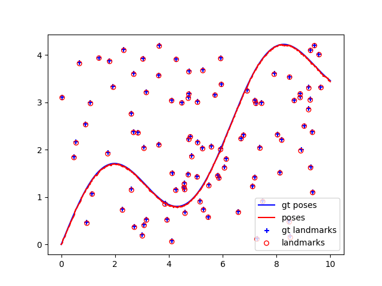
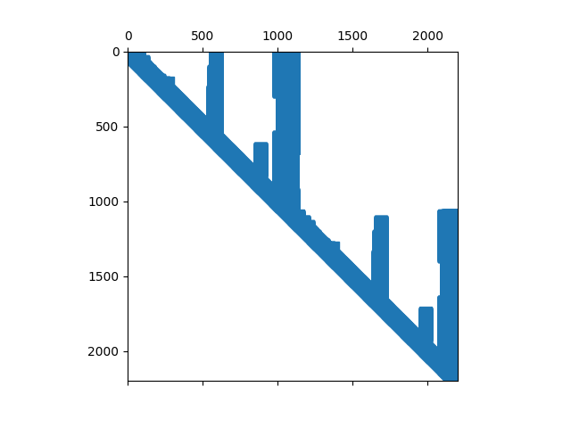
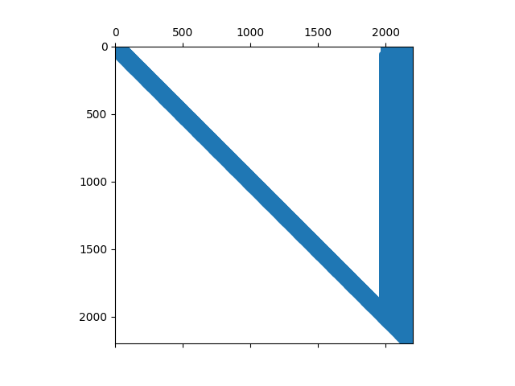
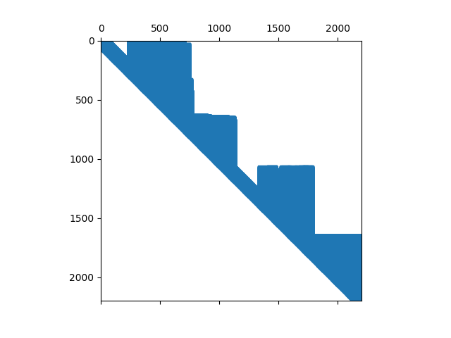
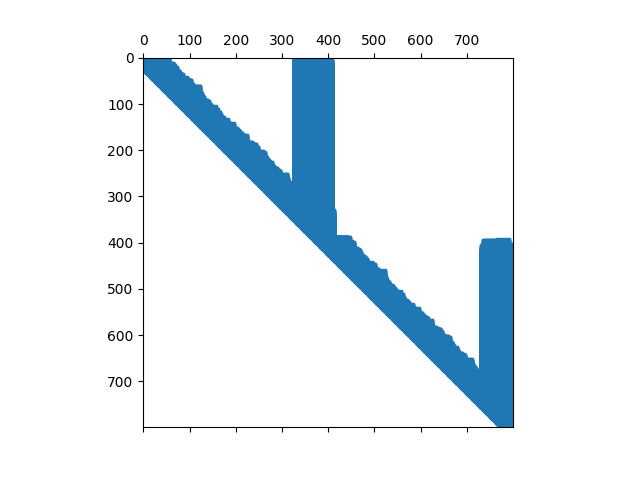
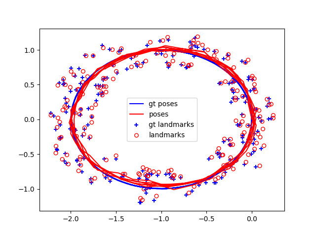
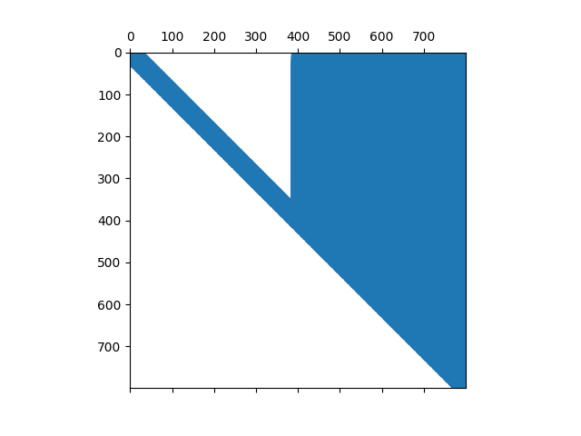
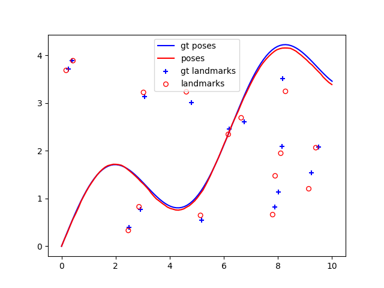
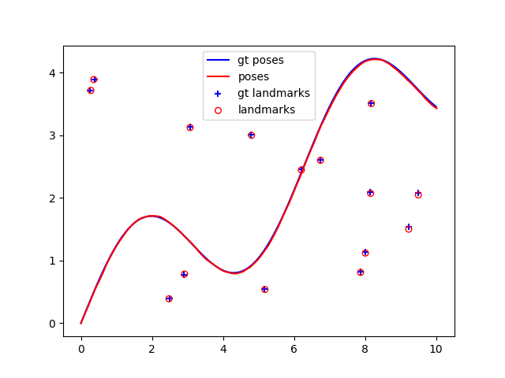

Mini project 3 · CMU 16-833
Mini project 3 · CMU 16-833
Linear and nonlinear SLAM solvers.
Treating SLAM as one large sparse least-squares problem instead of a filter, then digging into what actually makes it fast. The answer is not the factorization you pick so much as how you order the columns before you factor.
SLAM as least squares
The filtering approaches in the earlier mini projects process measurements sequentially, carrying a belief forward. This one takes the batch view: stack every odometry and landmark measurement into one big linear system and solve it all at once. Each odometry measurement constrains consecutive poses, each landmark observation constrains a pose to a landmark, and the resulting matrix is enormous but extremely sparse, since any given measurement touches only a handful of variables.
For the linear case both measurement functions are simple differences, which makes their Jacobians constant:
Because the model is linear, the solution comes directly from solving the normal equations in a single batch, exploiting sparsity. The estimated trajectory and landmarks sit essentially on top of ground truth.

Which solver, and why
I benchmarked seven methods on the linear dataset. The ranking is not what you would guess from the names alone:
LU with NATURAL ordering is fastest. In general LU beats QR here because LU
operates on AᵀA, a smaller square matrix, while QR factorizes A itself, the larger rectangular
one. The pseudo-inverse is slowest for the obvious reason: it does not exploit sparsity at
all, which on a problem defined by its sparsity is fatal.
The square root information matrices explain the rest. QR with COLAMD ordering
produces a noticeably sparser R than plain QR, which is exactly why qr colamd
beats qr. But LU with COLAMD produces a denser matrix than
LU with NATURAL, making it slower. Reordering is not universally good; it
interacts with the factorization.






Adding a loop
The loop dataset revisits earlier parts of the trajectory, which adds constraints tying distant poses together. Rerunning everything on it changes the ranking substantially, and it gets faster across the board.

Here COLAMD ordering speeds up both LU and QR, the reverse of what
happened on the non-loop data. The reason is visible in the matrices: with loop constraints,
NATURAL ordering yields denser R matrices than in the linear case, while
COLAMD yields substantially sparser ones. LU remains faster than QR overall,
though QR is the numerically more stable of the two, which is the tradeoff you are actually
making when you choose between them.


The nonlinear case
Real range-and-bearing measurements are not linear. The landmark measurement becomes an arctangent for bearing and a square root for range, so the Jacobian is no longer constant and now depends on the current estimate:
That difference changes the whole solution strategy. In the linear case the solution comes directly from the normal equations in one batch. In the nonlinear case no direct solution exists, so it is solved iteratively and requires an initial estimate: linearize the measurement model about the current estimate, solve for an increment, add the increment to the estimate, and repeat until convergence.

